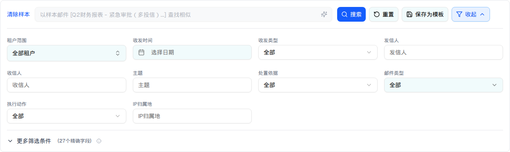

| 所属组件 | 2.2 搜索与筛选区（受表格 / 详情抽屉回传驱动） |
| 主文件 | index.html#component-2-2 |
| 触发路径 | ① 表格行内「找相似」；② 工具条「以选中为样本查找相似」（≤10 封）；③ 详情抽屉「查找相似邮件」（同时关闭抽屉） |

| 元素 | 默认态 | 样本态（单样本） | 样本态（批量样本） |
|---|---|---|---|
| 搜索输入框 | 可输入，占位符「描述邮件特征…」 | disabled + 灰底（bg-gray-100 text-gray-500 cursor-not-allowed），value = 「以样本邮件 [主题前20字...] 查找相似」 | value = 「以选中的 N 封邮件为样本查找相似」 |
| 清除样本 | 不渲染 | 渲染（蓝色文字按钮，搜索框左侧） | 同 |
| 示例提示词行 | 渲染 3 个 | 整行不渲染 | 整行不渲染 |
| 搜索按钮 | 无输入时 disabled | enabled（样本态下允许直接搜索） | 同 |
| 表格 | 无相似度列 | 新增「相似度」列 + 顶部蓝色检索摘要条 | 同（摘要文案含样本数） |
| 比对项 | demo 实际 DOM | 提取的 HTML | 是否一致 |
|---|---|---|---|
| 根节点 | div.bg-white.mx-4.my-3 | 同 | 一致 |
| 后代节点数 | 94（默认 102 − 8：示例提示词整行移除、清除样本按钮加入） | 94 | 一致 |
| 搜索框 disabled | true | true | 一致 |
| 清除样本按钮 | 存在（text-blue-600） | 存在 | 一致 |
| 示例提示词 | 不渲染 | 不包含 | 一致 |